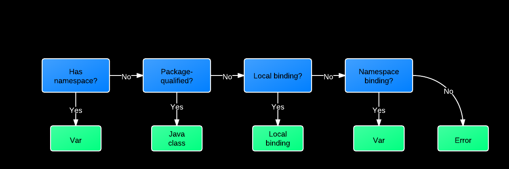

Namespaces, Vars, and Symbols (Oh, My!)
Table of Contents
- 1 Namespaces, Symbols, and Vars (Oh, My!)
- 1.1 Slides
- 1.1.1 Me
- 1.1.2 Intended Audience
- 1.1.3 The Big Pile of Code
- 1.1.4 What's Going On Here?
- 1.1.5 Loading
- 1.1.6 Require
- 1.1.7 Reading
- 1.1.8 Evaluation
- 1.1.9 What is a Symbol?
- 1.1.10 What is a Namespace?
- 1.1.11 What is a Var?
- 1.1.12 Creating Vars
- 1.1.13 Referring Vars
- 1.1.14 How are Symbols Evaluated?
- 1.1.15 The Code Again
- 1.1.16
ns
- 1.1 Slides
1 Namespaces, Symbols, and Vars (Oh, My!) title
1.1 Slides
1.1.1 Me
- Craig Andera
- @craigandera
- craig@thinkrelevance.com
1.1.2 Intended Audience
- People who have been using Clojure a bit
- People who haven't written a book about it
- Anyone who remains confused about
(ns)syntax
1.1.3 The Big Pile of Code
(ns hello (:require [clojure.string :as str])) (defn -main [& args] (println "hello" (str/join " and " args)))
1.1.4 What's Going On Here?
- A file gets loaded
- It is read
- It gets evaluated
1.1.5 Loading
- Primary API for this is
require
- Takes a namespace name and finds a file on CLASSPATH
- Turns text in file into Clojure data structures
- Evaluates them
- Also lets you provide an alias
1.1.6 Require
;; Load $CLASSPATH/net/cgrand/enlive_html.clj (require 'net.cgrand.enlive-html) ;; Load it and let us refer to it as html (require '[net.cgrand.enlive-html :as html]) ;; Still have to use namespaces (net.cgrand.enlive-html/render ...) (html/render ...)
1.1.7 Reading
1.1.8 Evaluation
- Many things in Clojure evaluate to themselves
- Maps, sets, vectors, strings, numbers
- Maps, sets, vectors, strings, numbers
- Some things don't
- Lists => invocations
- Symbols => ??
- Lists => invocations
1.1.9 What is a Symbol?
- A name
- With an optional namespace
- Has no value
1.1.10 What is a Namespace?
- A mapping from symbols to
- Java classes
- Vars
- Java classes
- Can view via
ns-mappingsand friends
1.1.11 What is a Var?
- A name and zero more values
- A var with zero values is unbound
- Usually has one value: the root value
- Can have a per-thread value, too
- Via
binding, iff marked^:dynamic
- Via
- Value is often a function
1.1.12 Creating Vars
defcreates a new var in the current namespace
- Optionally associates a value
(ns some.name) ;; Var #'some.name/foo is unbound (def foo) ;; Var #'some.name/bar has function value (defn bar [x] (+ 2 x))
1.1.13 Referring Vars fixnowrap
- Vars from other namespaces can be mapped in
referdoes this
- Can pull them in selectively via
:onlyor:exclude
;; Refer public symbols in net.cgrand.enlive-html (refer 'net.cgrand.enlive-html) ;; Refer only foo and bar (refer '[blah.whatever :only (foo bar)]) ;; Refer everything except defroutes and GET (refer '[compojure.core :except (defroutes GET)])
1.1.14 How are Symbols Evaluated? fixnowrap

1.1.15 The Code Again
(ns hello (:require [clojure.string :as str])) (defn -main [& args] (println "hello" (str/join " and " args)))
1.1.16 ns
Now you can understand even the hairiest of ns expressions:
(ns foo.bar (:refer-clojure :exclude [ancestors printf]) (:require (clojure test test.junit)) (:use (my.lib this that)) (:import (java.util Date Timer Random) java.sql.Connection))